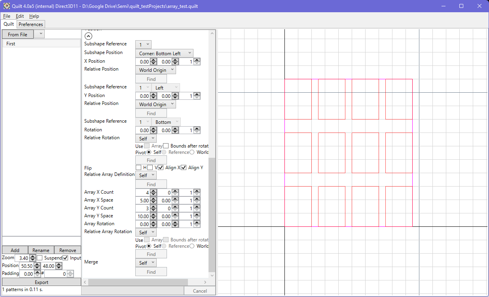
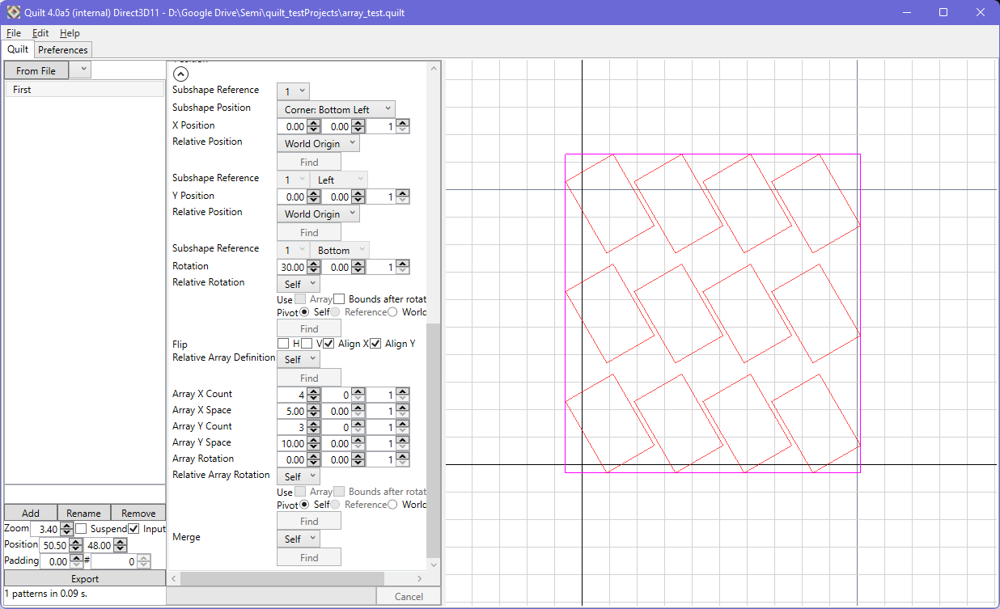
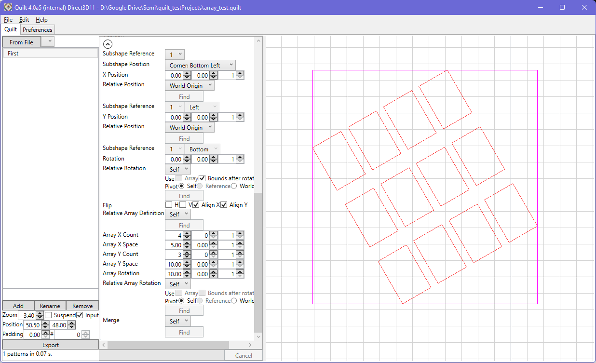
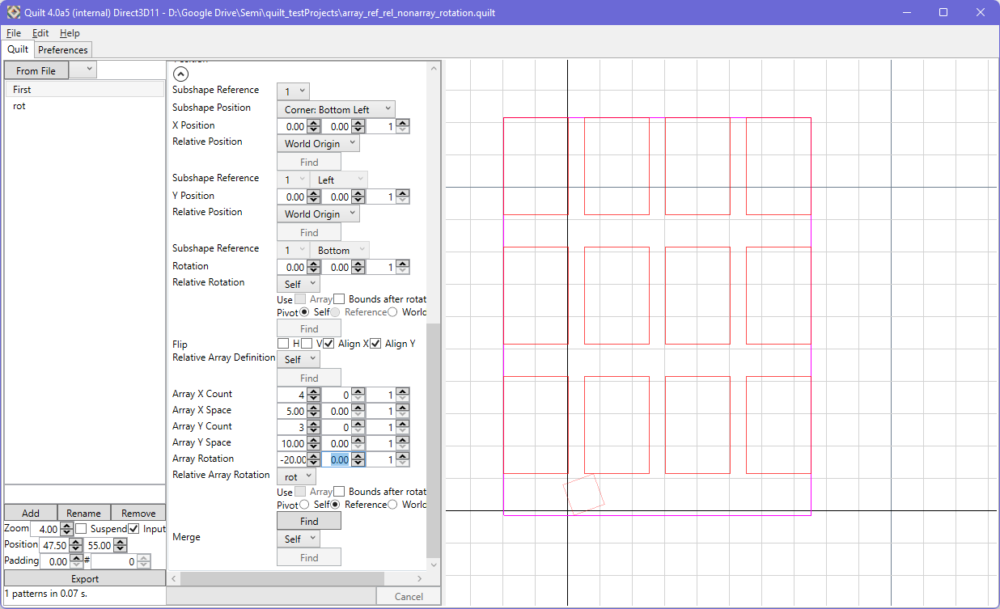
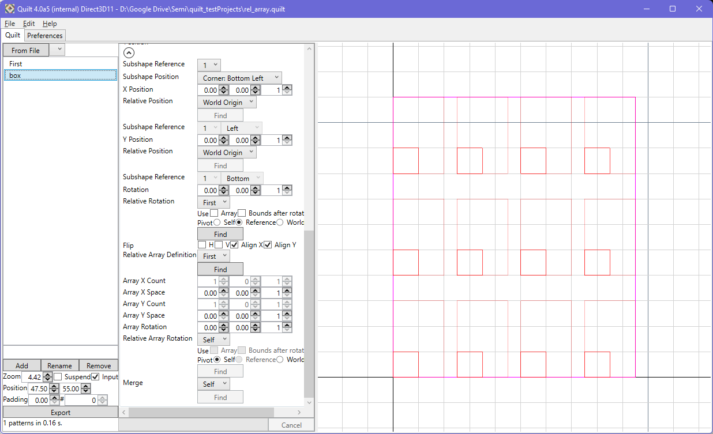
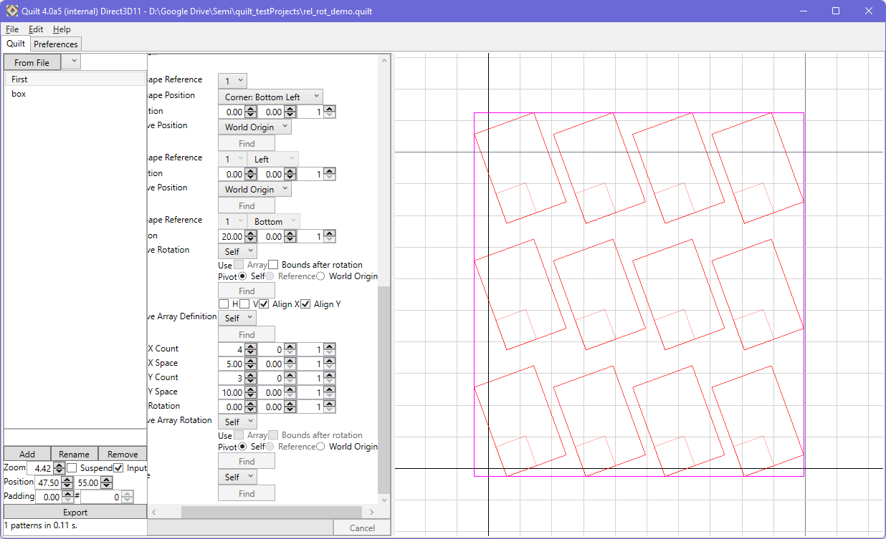
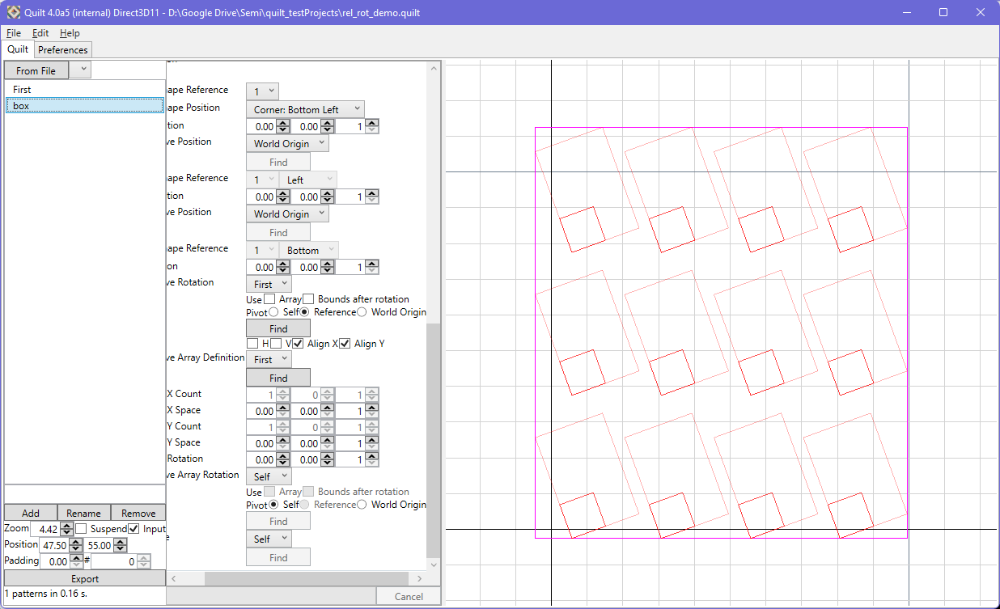

An array can be constructed within a pattern element, with a defined instance count and pitch in each of X and Y. The array is constructed using the shape defined within the element itself. Note that the array is constructed after all other transformations to the shape are applied (e.g. rotation).
|  |  |
The array itself can be rotated around its centerpoint (the center of the array's bounding box). In each of X and Y, counts and spacing can be defined. This rotation can be relative to other pattern elements and also take into account array rotation from other elements.
|  | |
|  |
The placement of other elements in the pattern can be relative to the array bounding box or to subshapes of the element - if the reference element has an array definition, it will be available in the subshape drop-down.
To allow for consistent arrays to be constructed across multiple elements, a relative array definition can be set. The X and Y pitch (the pitch being the sum of the respective cell dimension and spacing), and instance counts, will come from the reference array element.
|  |
Element and array rotations can also be referenced across elements. As noted before, you can use the 'Ref Pivot' controls to configure the rotation.
|  |  |